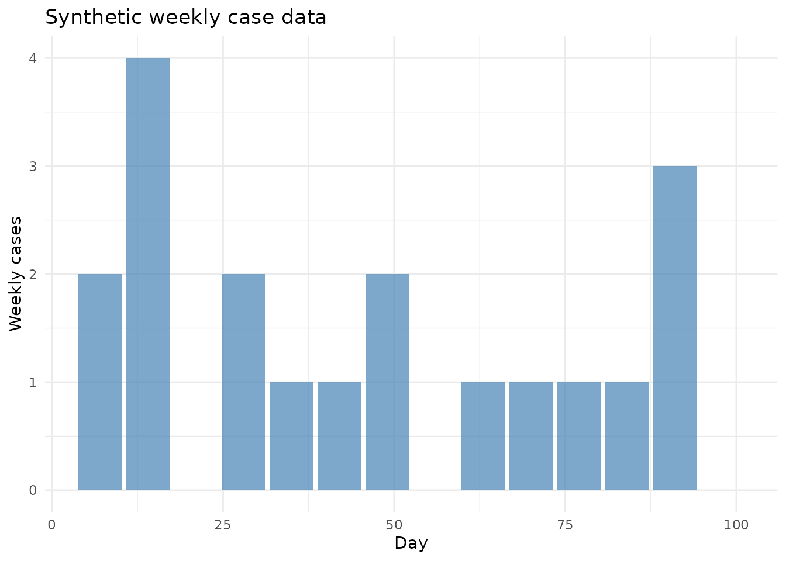
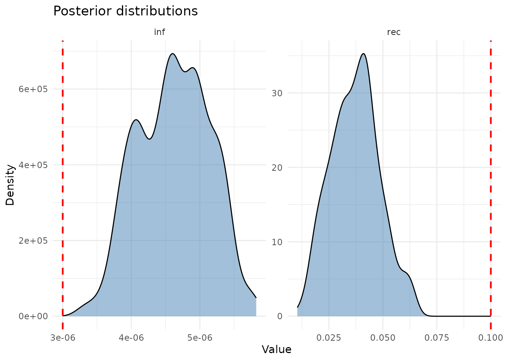

Introduction
A key advantage of composing models algebraically is that the same
model definition used for simulation can also be used for data
fitting. algebraicodin integrates with dust2’s
particle filter and monty’s MCMC infrastructure to enable Bayesian
inference on compartmental models.
This vignette walks through:
- Generating synthetic epidemic data
- Adding an observation model to a Petri net
- Creating a particle filter
- Running MCMC to recover parameters
- Plotting diagnostics and posterior distributions
Generating synthetic data
First, simulate an epidemic using the stochastic model to create “observed” incidence data:
gen <- pn_to_odin_system(sir, type = "stochastic")
# True parameters
true_pars <- list(inf = 3e-6, rec = 0.1,
S0 = 9990, I0 = 10, R0 = 0)
sys <- dust_system_create(gen(), true_pars,
n_particles = 1, dt = 1, seed = 1)
#> ✔ Wrote 'DESCRIPTION'
#> ✔ Wrote 'NAMESPACE'
#> ✔ Wrote 'R/dust.R'
#> ✔ Wrote 'src/dust.cpp'
#> ✔ Wrote 'src/Makevars'
#> ℹ 12 functions decorated with [[cpp11::register]]
#> ✔ generated file cpp11.R
#> ✔ generated file cpp11.cpp
#> ℹ Re-compiling odin.system1c0df591
#> ── R CMD INSTALL ───────────────────────────────────────────────────────────────
#> * installing *source* package ‘odin.system1c0df591’ ...
#> ** this is package ‘odin.system1c0df591’ version ‘0.0.1’
#> ** using staged installation
#> ** libs
#> using C++ compiler: ‘g++ (Ubuntu 13.3.0-6ubuntu2~24.04.1) 13.3.0’
#> g++ -std=gnu++17 -I"/opt/R/4.5.3/lib/R/include" -DNDEBUG -I'/home/runner/work/_temp/Library/cpp11/include' -I'/home/runner/work/_temp/Library/dust2/include' -I'/home/runner/work/_temp/Library/monty/include' -I/usr/local/include -DHAVE_INLINE -fopenmp -fpic -g -O2 -Wall -pedantic -fdiagnostics-color=always -c cpp11.cpp -o cpp11.o
#> g++ -std=gnu++17 -I"/opt/R/4.5.3/lib/R/include" -DNDEBUG -I'/home/runner/work/_temp/Library/cpp11/include' -I'/home/runner/work/_temp/Library/dust2/include' -I'/home/runner/work/_temp/Library/monty/include' -I/usr/local/include -DHAVE_INLINE -fopenmp -fpic -g -O2 -Wall -pedantic -fdiagnostics-color=always -c dust.cpp -o dust.o
#> g++ -std=gnu++17 -shared -L/opt/R/4.5.3/lib/R/lib -L/usr/local/lib -o odin.system1c0df591.so cpp11.o dust.o -fopenmp -L/opt/R/4.5.3/lib/R/lib -lR
#> installing to /tmp/Rtmp11vh55/devtools_install_2e1d3f5d71a9/00LOCK-dust_2e1d5ea7904c/00new/odin.system1c0df591/libs
#> ** checking absolute paths in shared objects and dynamic libraries
#> * DONE (odin.system1c0df591)
#> ℹ Loading odin.system1c0df591
dust_system_set_state_initial(sys)
times <- seq(0, 100)
res <- dust_system_simulate(sys, times)
state <- dust_unpack_state(sys, res)
# Extract "true" incidence (new infections per day)
new_inf <- c(0, pmax(0, -diff(state$S)))
# Observe with Poisson noise at weekly intervals
obs_times <- seq(7, 98, by = 7)
obs_cases <- sapply(obs_times, function(t) {
idx <- which(times >= (t - 6) & times <= t)
rpois(1, lambda = max(1, sum(new_inf[idx])))
})
data <- data.frame(time = obs_times, cases = obs_cases)
ggplot(data, aes(x = time, y = cases)) +
geom_col(fill = "steelblue", alpha = 0.7) +
labs(title = "Synthetic weekly case data",
x = "Day", y = "Weekly cases") +
theme_minimal()
Adding an observation model
The observe() function specifies how model quantities
relate to data. For incidence data, we track the inf
transition and compare with a Poisson distribution. Adding a noise
parameter prevents zero-lambda issues:
compare_spec <- list(
cases = observe("Poisson", transition = "inf", noise = "exp_noise")
)
# See generated code
code <- pn_to_odin(sir, type = "stochastic", compare = compare_spec)
cat(code)
#> ## Auto-generated by algebraicodin
#>
#> ## Parameters
#> inf <- parameter()
#> rec <- parameter()
#>
#> ## Initial conditions
#> S0 <- parameter()
#> I0 <- parameter()
#> R0 <- parameter()
#>
#> initial(S) <- S0
#> initial(I) <- I0
#> initial(R) <- R0
#>
#> ## Transition probabilities and draws
#> p_inf <- 1 - exp(-(inf * I) * dt)
#> n_inf <- Binomial(S, p_inf)
#> p_rec <- 1 - exp(-(rec) * dt)
#> n_rec <- Binomial(I, p_rec)
#>
#> ## Update equations
#> update(S) <- S - n_inf
#> update(I) <- I + n_inf - n_rec
#> update(R) <- R + n_rec
#>
#> ## Observation parameters
#> exp_noise <- parameter(1e6)
#>
#> ## Incidence tracking
#> initial(incidence_inf, zero_every = 1) <- 0
#> update(incidence_inf) <- incidence_inf + n_inf
#>
#> ## Observation noise
#> noise_cases <- incidence_inf + 1 / exp_noise
#>
#> ## Comparison to data
#> cases <- data()
#> cases ~ Poisson(noise_cases)The key additions are: - Incidence tracking:
incidence_inf accumulates new infections, resetting each
timestep via zero_every - Noise:
1 / exp_noise adds a tiny positive floor -
Comparison: cases ~ Poisson(noise_cases)
defines the likelihood
Creating a particle filter
filter <- create_filter(sir, data,
compare = compare_spec,
type = "stochastic",
n_particles = 100)
#> ✔ Wrote 'DESCRIPTION'
#> ✔ Wrote 'NAMESPACE'
#> ✔ Wrote 'R/dust.R'
#> ✔ Wrote 'src/dust.cpp'
#> ✔ Wrote 'src/Makevars'
#> ℹ 27 functions decorated with [[cpp11::register]]
#> ✔ generated file cpp11.R
#> ✔ generated file cpp11.cpp
#> ℹ Re-compiling odin.systemefda35e3
#> ── R CMD INSTALL ───────────────────────────────────────────────────────────────
#> * installing *source* package ‘odin.systemefda35e3’ ...
#> ** this is package ‘odin.systemefda35e3’ version ‘0.0.1’
#> ** using staged installation
#> ** libs
#> using C++ compiler: ‘g++ (Ubuntu 13.3.0-6ubuntu2~24.04.1) 13.3.0’
#> g++ -std=gnu++17 -I"/opt/R/4.5.3/lib/R/include" -DNDEBUG -I'/home/runner/work/_temp/Library/cpp11/include' -I'/home/runner/work/_temp/Library/dust2/include' -I'/home/runner/work/_temp/Library/monty/include' -I/usr/local/include -DHAVE_INLINE -fopenmp -fpic -g -O2 -Wall -pedantic -fdiagnostics-color=always -c cpp11.cpp -o cpp11.o
#> g++ -std=gnu++17 -I"/opt/R/4.5.3/lib/R/include" -DNDEBUG -I'/home/runner/work/_temp/Library/cpp11/include' -I'/home/runner/work/_temp/Library/dust2/include' -I'/home/runner/work/_temp/Library/monty/include' -I/usr/local/include -DHAVE_INLINE -fopenmp -fpic -g -O2 -Wall -pedantic -fdiagnostics-color=always -c dust.cpp -o dust.o
#> g++ -std=gnu++17 -shared -L/opt/R/4.5.3/lib/R/lib -L/usr/local/lib -o odin.systemefda35e3.so cpp11.o dust.o -fopenmp -L/opt/R/4.5.3/lib/R/lib -lR
#> installing to /tmp/Rtmp11vh55/devtools_install_2e1d1a2c50f6/00LOCK-dust_2e1d554243e3/00new/odin.systemefda35e3/libs
#> ** checking absolute paths in shared objects and dynamic libraries
#> * DONE (odin.systemefda35e3)
#> ℹ Loading odin.systemefda35e3Test the likelihood at the true parameters:
pars_test <- c(true_pars, list(exp_noise = 1e6))
ll <- dust_likelihood_run(filter, pars_test)
cat("Log-likelihood at true params:", ll, "\n")
#> Log-likelihood at true params: -44.65336Setting up MCMC
Prior distributions
prior <- build_prior(
inf = prior_uniform(min = 1e-7, max = 1e-4),
rec = prior_uniform(min = 0.01, max = 0.5)
)Diagnostics
Posterior distributions
plot_posterior(samples, burnin = 100,
true_values = list(inf = 3e-6, rec = 0.1))
Parameter summary
burnin <- 100
n_steps <- dim(samples$pars)[2]
for (i in 1:2) {
nm <- c("inf", "rec")[i]
vals <- as.vector(samples$pars[i, (burnin+1):n_steps, ])
cat(sprintf("%s: mean=%.2e, median=%.2e, 95%% CI=[%.2e, %.2e]\n",
nm, mean(vals), median(vals),
quantile(vals, 0.025), quantile(vals, 0.975)))
}
#> inf: mean=4.62e-06, median=4.62e-06, 95% CI=[3.71e-06, 5.50e-06]
#> rec: mean=3.72e-02, median=3.73e-02, 95% CI=[1.74e-02, 6.12e-02]Stock-flow model fitting
The same workflow applies to stock-flow models:
sir_sf <- stock_and_flow(
stocks = c("S", "I", "R"),
flows = list(
infection = flow(from = "S", to = "I", rate = beta * S * I / N),
recovery = flow(from = "I", to = "R", rate = gamma * I)
),
sums = list(N = c("S", "I", "R")),
params = c("beta", "gamma")
)
# Create filter with flow-based incidence tracking
filter_sf <- create_filter(sir_sf, data,
compare = list(
cases = observe("Poisson", flow = "infection", noise = "exp_noise")
),
type = "stochastic",
n_particles = 100)
#> ── R CMD INSTALL ───────────────────────────────────────────────────────────────
#> * installing *source* package ‘odin.system6944e5f3’ ...
#> ** this is package ‘odin.system6944e5f3’ version ‘0.0.1’
#> ** using staged installation
#> ** libs
#> using C++ compiler: ‘g++ (Ubuntu 13.3.0-6ubuntu2~24.04.1) 13.3.0’
#> g++ -std=gnu++17 -I"/opt/R/4.5.3/lib/R/include" -DNDEBUG -I'/home/runner/work/_temp/Library/cpp11/include' -I'/home/runner/work/_temp/Library/dust2/include' -I'/home/runner/work/_temp/Library/monty/include' -I/usr/local/include -DHAVE_INLINE -fopenmp -fpic -g -O2 -Wall -pedantic -fdiagnostics-color=always -c cpp11.cpp -o cpp11.o
#> g++ -std=gnu++17 -I"/opt/R/4.5.3/lib/R/include" -DNDEBUG -I'/home/runner/work/_temp/Library/cpp11/include' -I'/home/runner/work/_temp/Library/dust2/include' -I'/home/runner/work/_temp/Library/monty/include' -I/usr/local/include -DHAVE_INLINE -fopenmp -fpic -g -O2 -Wall -pedantic -fdiagnostics-color=always -c dust.cpp -o dust.o
#> g++ -std=gnu++17 -shared -L/opt/R/4.5.3/lib/R/lib -L/usr/local/lib -o odin.system6944e5f3.so cpp11.o dust.o -fopenmp -L/opt/R/4.5.3/lib/R/lib -lR
#> installing to /tmp/Rtmp11vh55/devtools_install_2e1d1a76fecf/00LOCK-dust_2e1d578d5a08/00new/odin.system6944e5f3/libs
#> ** checking absolute paths in shared objects and dynamic libraries
#> * DONE (odin.system6944e5f3)
# Check likelihood
ll_sf <- dust_likelihood_run(filter_sf, list(
beta = 0.03, gamma = 0.1,
S0 = 9990, I0 = 10, R0 = 0, exp_noise = 1e6
))
cat("Stock-flow log-likelihood:", ll_sf, "\n")
#> Stock-flow log-likelihood: -47.6366Prevalence data
For data that measures current state (not incidence), use
state instead of transition:
code_prev <- pn_to_odin(sir, type = "stochastic",
compare = list(
prevalence = observe("Normal", state = "I", sd = "obs_sd")
))
cat(code_prev)
#> ## Auto-generated by algebraicodin
#>
#> ## Parameters
#> inf <- parameter()
#> rec <- parameter()
#>
#> ## Initial conditions
#> S0 <- parameter()
#> I0 <- parameter()
#> R0 <- parameter()
#>
#> initial(S) <- S0
#> initial(I) <- I0
#> initial(R) <- R0
#>
#> ## Transition probabilities and draws
#> p_inf <- 1 - exp(-(inf * I) * dt)
#> n_inf <- Binomial(S, p_inf)
#> p_rec <- 1 - exp(-(rec) * dt)
#> n_rec <- Binomial(I, p_rec)
#>
#> ## Update equations
#> update(S) <- S - n_inf
#> update(I) <- I + n_inf - n_rec
#> update(R) <- R + n_rec
#>
#> ## Observation parameters
#> obs_sd <- parameter()
#>
#> ## Comparison to data
#> prevalence <- data()
#> prevalence ~ Normal(I, obs_sd)Composed model fitting
Algebraically composed models work seamlessly:
# Compose SIR from building blocks
dict <- epi_dict()
sir_uwd <- uwd(
outer = c("s", "i", "r"),
infection = c("s", "i"),
recovery = c("i", "r")
)
sir_composed <- apex(oapply(sir_uwd, list(dict$infection, dict$recovery)))
# Generate with comparison — works identically
code_comp <- pn_to_odin(sir_composed, type = "stochastic",
compare = list(cases = observe("Poisson", transition = "inf")))
cat(code_comp)
#> ## Auto-generated by algebraicodin
#>
#> ## Parameters
#> inf <- parameter()
#> rec <- parameter()
#>
#> ## Initial conditions
#> s0 <- parameter()
#> i0 <- parameter()
#> r0 <- parameter()
#>
#> initial(s) <- s0
#> initial(i) <- i0
#> initial(r) <- r0
#>
#> ## Transition probabilities and draws
#> p_inf <- 1 - exp(-(inf * i) * dt)
#> n_inf <- Binomial(s, p_inf)
#> p_rec <- 1 - exp(-(rec) * dt)
#> n_rec <- Binomial(i, p_rec)
#>
#> ## Update equations
#> update(s) <- s - n_inf
#> update(i) <- i + n_inf - n_rec
#> update(r) <- r + n_rec
#>
#> ## Incidence tracking
#> initial(incidence_inf, zero_every = 1) <- 0
#> update(incidence_inf) <- incidence_inf + n_inf
#>
#> ## Comparison to data
#> cases <- data()
#> cases ~ Poisson(incidence_inf)Summary
| Function | Purpose |
|---|---|
observe() |
Define observation model |
create_filter() |
Build dust2 particle filter |
fit_mcmc() |
Run MCMC inference |
build_prior() |
Create prior from specs |
plot_traces() |
MCMC trace plots |
plot_posterior() |
Posterior density plots |
plot_fit() |
Model vs data comparison |
Key observation types: - Incidence:
observe("Poisson", transition = "inf") — tracks new events
per timestep - Prevalence:
observe("Normal", state = "I", sd = "sigma") — observes
current state - Custom:
observe("Poisson", expr = "mu * I") — arbitrary
expression